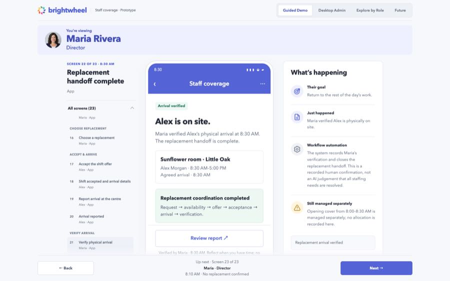

From the brief you receive to the choices you defend in the next interview. AI helps where the rules allow it.
Dave WangProduct Dave · Product Academy

A mistake I've made
I once built a polished answer to the wrong question.
What I built
An investor concept for a RentSpree interview.
What mattered first
The owner handoff after screening. The immediate job was narrower.
The first deliverable is a clear reading of the brief.
The whole interview loop
The task starts with the email and ends in the discussion.
01Receive
Read the real ask.
02Decide
Choose a small bet.
03Build
Make proof you can review.
04Submit
Make it easy to assess.
05Defend
Explain the trade-off.
Today you'll leave with a one-page plan, one reviewable slice, and a 60-second explanation.
Receive · workshop simulation
Here is the brief we'll work through.
The situation
A childcare teacher calls out before opening. The director needs an approved replacement and a clear answer to: is the room actually covered?
Assignment: Show one flow or small prototype, then explain your choice and the next thing you would test.
Time budget
3 hours of work.
Evidence
No user access. Label assumptions and simulated data.
AI for this exercise
Allowed, with a short use note.
This is a teaching scenario adapted from Dave's Brightwheel concept, not the company's original assignment.
Receive · method
Before opening AI, mark four things in the brief.
1 · Exact ask
Whose problem, at which moment, with what outcome?
2 · Deliverable
What will the reviewer actually open or read?
3 · Limits
Time, evidence, scope, format, and what you cannot know.
4 · Permissions
Is AI allowed? What must you disclose?
If evaluation criteria are missing, ask what the team wants this task to demonstrate.
Activity 1 · 3 minutes
Write the assignment back in your own words.
Use your own brief or the Brightwheel simulation. Write four short lines:
01"The user needs to…"
02"I must submit…"
03"I have to work within…"
04"AI is…"
A director needs honest status on both the approved replacement and any opening gap. I will show one flow and a short rationale in three hours. I have no user evidence; the prototype is illustrative. AI is allowed for this practice and must be disclosed.
Receive · clarify
Ask the questions that change your work.
Depth
"Is there a time expectation or level of fidelity you want me to stay within?"
AI rule
"May I use AI, and how would you like me to describe its contribution?"
If you cannot get an answer, state your assumption in the submission. If AI use is prohibited, do the work without it.
Decide · one user, one moment, one finish line
Choose the smallest decision worth showing.
Too broad for three hours
"Redesign the whole staff scheduling system."
A useful bet
"Can a director get an approved replacement on site—and see any opening gap?"
Scope is a choice you should be able to explain.
Decide · Brightwheel choice point
Alex is available. Is the room covered?
6:10 AMTeacher calls out
→
6:20 AMAlex available, not assigned
→
8:00 AMRoom opens
→
8:30 AMEarliest arrival
What does the director still need to know or arrange?
Alex is only available, not assigned. Even if Alex accepts, 8:30 arrival leaves a 30-minute opening gap. Show the unresolved status and the director's next action for interim cover.
Decide · timebox the work
Spend the three hours on a decision, not on polish.
15mDecodeAsk and limits
25mChooseQuestion and scope
90mMakeOne complete slice
30mReviewFacts, flow, links
20mPackageRationale and handoff
Stop adding screens early enough to test the artifact and explain your choices.
Build · worked example
Build the path to the outcome.
01Absence reported
→
02Director selects approved staff
→
03Replacement accepts
→
04Director verifies arrival
Parallel decision: who covers 8:00–8:30? This prototype leaves that allocation open for the director.
Why this screen? It records a human verification. It also says opening cover from 8:00 to 8:30 is managed separately.
The artifact makes the decision—and the remaining gap—visible.
Build · AI when the task permits
Use AI to challenge the Brightwheel flow.
One AI job
"Find failure states in my coverage handoff."
Possible draft
"Alex is available, so the room is covered."
Human correction
Available is not assigned. 8:30 arrival still leaves the opening gap.
A generated claim is a suggestion. Check it against the brief, then record what you changed.
Illustrative AI draft for this exercise; not a transcript of Dave's AI use.
Build · example prompt
Ask for a critique you can verify.
I am working on this take-home task: [paste the brief only if its rules allow it].
My proposed scope: [one user, one moment, one outcome].
My evidence: [what the brief actually provides].
Find three assumptions or failure states that could make my response miss the brief. For each, quote the relevant line of the brief or label it as an inference. Do not invent user research, company policy or metrics. End with one question I should answer before building.
Read the output against the original brief. You decide what to change.
Build · choose your slice
Pick one piece of work you can finish and review.
Flow
One user path, including the unresolved state.
Evidence table
Three claims, sources, and open questions.
Response draft
One recommendation, its trade-off, and next test.
Definition of done: a reviewer can see the decision and ask you why you made it.
Activity 2 · 10 minutes
Try AI on one part. Then make one thing.
10:00
2 + 6 + 2 minutes
Ask AI to critique one part. Make one reviewable slice. Mark one AI suggestion: keep, change or reject.
Use Brightwheel or your own brief. If its AI rules prohibit use, do a self-critique and explain why.
Build · review gate
Before it becomes your submission, check the joins.
Facts
Can I point to where each claim came from?
Fit
Does this answer the exact question in the brief?
Finish line
Can the user complete the job—or see what remains open?
My edits
What did I keep, change or remove after AI?
Brightwheel: available ≠ accepted. Accepted ≠ arrived. Arrived at 8:30 ≠ covered at 8:00.
Submit · make the work easy to assess
Give the reviewer a clear route through your work.
Opening cover remains separate when the replacement arrives after 8:00.
Evidence
Brief and stated assumptions only; no user validation yet.
Next test
Can directors tell the difference between acceptance, arrival and room coverage?
AI note
If used: tool, task, what I checked, and what I changed.
Your turn · 2 minutes: write your own six-line note: answer, artifact, trade-off, evidence, next test, AI use.
SUBMISSION NOTE
Answer:
Artifact link:
Trade-off:
Evidence and assumptions:
Next test:
AI use (if allowed):
Defend · the next interview
Here is how I would explain the Brightwheel choice.
“I read this as a coverage handoff problem for the director. I chose to show the path from absence to verified arrival.
The flow shows an approved replacement being selected, accepting, and then being checked in by a person. I left matching automation out so I could focus on the handoff.
An 8:30 arrival still leaves the 8:00 opening gap for the director to resolve. This is a simulated concept, so next I would test whether directors understand that unresolved status.”
If you used AI, add the job it did, what you checked, and one change you made.
Activity 3 · 5 minutes
Explain it to a partner. Let them challenge it.
05:00
Partner asks
Why this outcome? What is unproven? What happens when the happy path fails?
Switch roles. Then revise one sentence in your plan or submission.
Transfer · a different take-home
Same method. Different buyer question.
My Yoodli concept helps an enablement lead discuss training value. It shows 32.7 estimated staff-hours saved in a fictional workspace.
What could I honestly say in an interview?
"This concept shows a way to report training activity and an estimated time-saving calculation. The demo data is fictional; I would validate the assumptions and outcomes with customers before claiming ROI."
TAKE-HOME PLAN
1. Exact ask / user / outcome:
2. Required deliverable and time limit:
3. AI rule and disclosure requirement:
4. What I know vs. assume:
5. One decision I will show:
6. Smallest reviewable artifact:
7. Trade-off and unresolved state:
8. What I will test next:
9. My 60-second explanation: